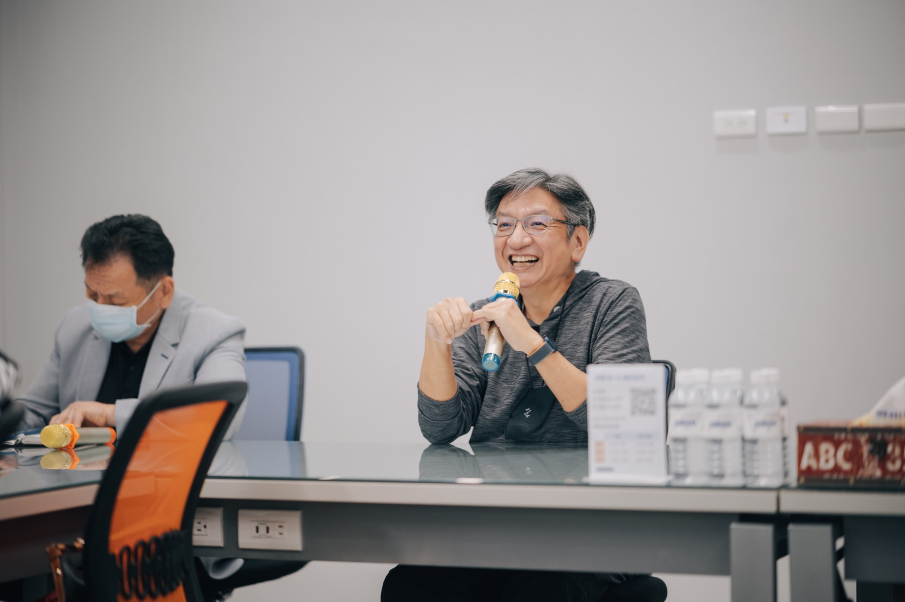
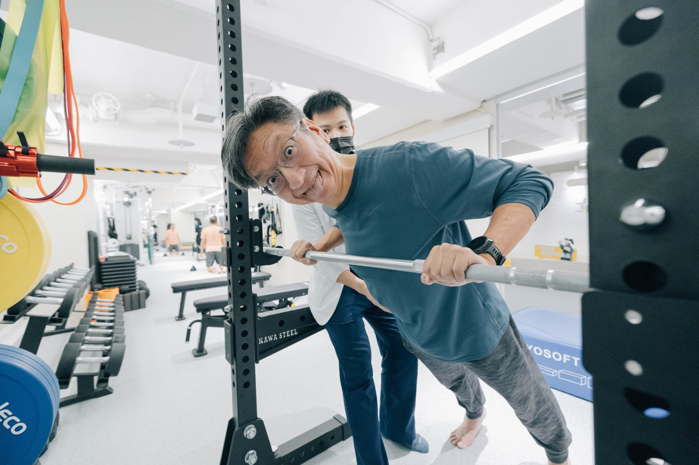
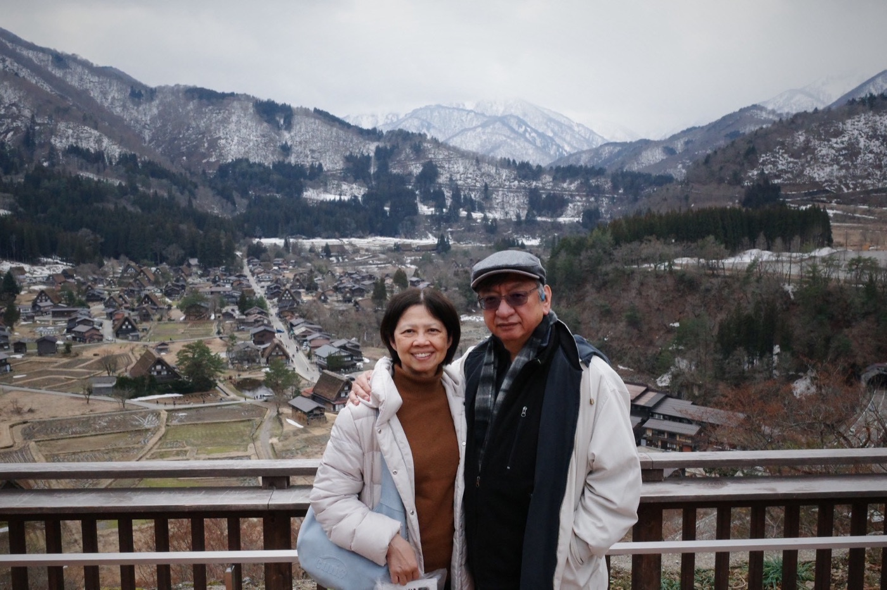

永 懷
追思紀念
我們親愛的父親
吳啓誠
先 生
1963.11.05 ─ 2026.07.16
民國 52 年 ─ 115 年 享壽 64 歲
TrustworthyAccountabilityIntegrity
我們摯愛的父親，已圓滿完成這一段生命旅程。他的音容笑貌與溫暖身影，將長存於我們心中。誠摯邀請親友帶著平靜溫暖的心，一同追思、懷念，陪伴父親走完人生最後一程。
CEREMONY
弔唁與追思
辭世中華民國 115 年 7 月 16 日 享壽 64 歲
弔唁堂7 月 23 日 — 7 月 29 日 每日 10:00 – 17:00
地點臥龍 17 行館
臺北市大安區臥龍街 188 巷 17 號 1 樓
臺北市大安區臥龍街 188 巷 17 號 1 樓
追思會115 年 8 月 9 日（星期日）08:40 – 10:00
通知另發
通知另發
家屬孝男 立凡 孝女 立勻・立心 敬啟
MEMORIES
生命剪影



WITH THANKS
懇辭花籃花圈
因弔唁堂空間有限，懇辭花籃、花圈等一切弔唁物品。諸承厚誼，敬感哀忱。
我們不道別
因為終將在未來以任何形式再會
誠摯感謝您的關懷與慰問。長輩與親友所給予的雲情高誼，我們銘感於心。居喪期間不克踵謝，謹致上衷心的感激。